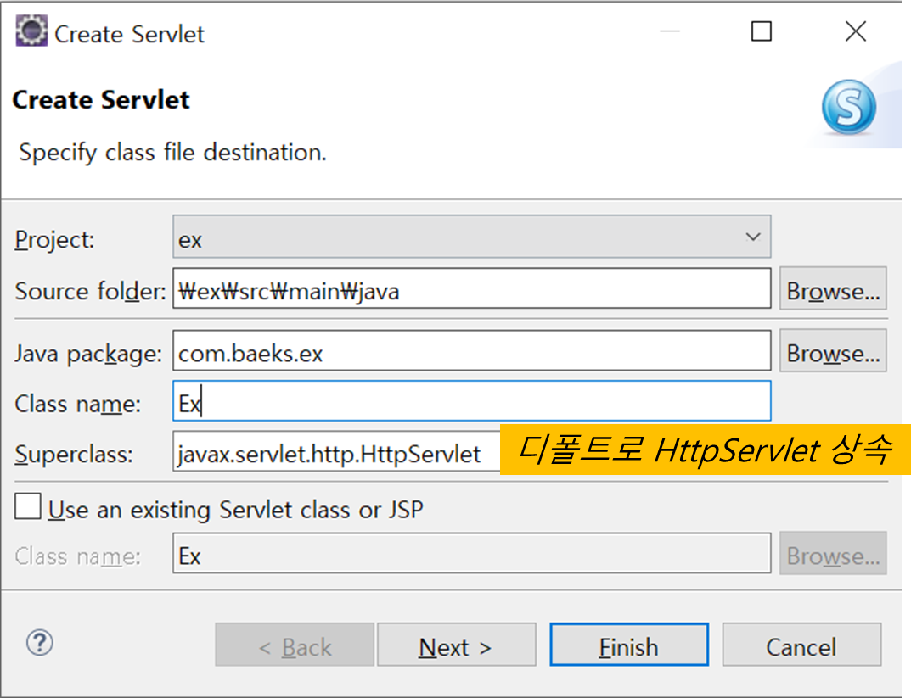
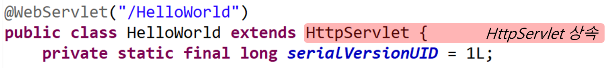
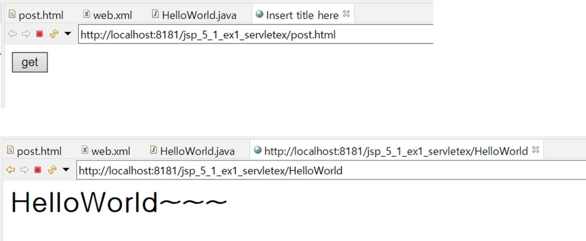
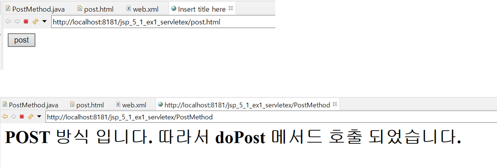

5. Servlet 1
0. 목차
Chapter5. Servlet 본격적으로 살펴보기-I
Ch5 - 1. 프로젝트 만들기
Ch5 - 2. doGet()
Ch5 - 3. doPost()
Ch5 - 4. 컨텍스트 패스(Context Path)
Ch5 - 1. 프로젝트 만들기
▶ HttpServlet 상속
▷ 학습자료 import
▷ Servlet 클래스는 HttpServlet 클래스를 상속


▶ 요청과 응답
▷ 고객과 WAS 사이의 요청과 응답
▷ 요청처리객체/응답처리객체를 톰캣에서 자동 생성 함
// 요청 = request, 응답 = response
protected void doGet(HttpServletRequest request, HttpServletResponse response) throws ServletException, IOException
▷ 예시
- 로그인
▶ 응답
▷ 응답 시, html로 응답하도록 설정(ContentType 설정)
response.setContentType("text/html; charset=utf-8");
▷ writer를 사용하여 html 읽어주기
- jsp(.jsp)는 html이 있어서 jsp 코드를 html에 작성하면 되지만
- servlet(.java)은 html 없음
- 그래서
writer를 사용해야 함
PrintWriter writer = response.getWriter(); writer.println("<html>"); writer.println("<head>"); writer.println("</head>"); writer.println("<body>"); writer.println("<h1>HelloWorld~~~</h1>"); writer.println("</body>"); writer.println("</html>"); writer.close();
▶ 요청
▷ html 태그에서 요청 방식을 설정
▷ GET 방식으로 호출
- GET 방식 : URL값으로 정보가 전송되어 보안에 약함
- Form 태그 method 속성값 : get
- doGet()로 받음
protected void doGet(HttpServletRequest request, HttpServletResponse response) throws ServletException, IOException { ... }
▷ POST 방식으로 호출
- POST 방식 : header를 이용해 정보가 전송되어 보안에 강함
- Form 태그 method 속성값 : post
- doPost()로 받음
protected void doPost(HttpServletRequest request, HttpServletResponse response) throws ServletException, IOException { ... }
Ch5 - 2. doGet()
▶ 호출 방법
▷ html 내 form 태그의 method 속성이 get일 경우 호출
▷ 웹 브라우저의 주소창을 이용하여 servlet을 요청한 경우 호출
▶ doGet() 매개변수
▷ 요청 : HttpServletRequest
▷ 응답 : HttpServletResponse
▶ 응답 방식
▷ HttpServletResponse 객체의 setContentType()를 호출하여 응답 방식 결정
response.setContentType("text/html; charset=utf-8");
▶ 출력 스트림 얻는 방법
▷ HttpServletResponse 객체의 getWriter()를 이용하여 출력 스트림을 얻음
PrintWriter writer = response.getWriter();
▶ 웹 브라우저에 출력
▷ 출력 스트림의 println()를 이용하여 웹 브라우저에 출력
writer.println("<html>");
writer.println("<head>");
writer.println("</head>");
writer.println("<body>");
writer.println("<h1>HelloWorld~~~</h1>");
writer.println("</body>");
writer.println("</html>");
▷ 마지막에 출력 객체 닫음
writer.close()
▶ post 방식으로 호출
▷ post.html
// post.html
<!DOCTYPE html>
<html>
<head>
<meta charset="utf-8">
<title>Insert title here</title>
</head>
<body>
<form action="HelloWorld" method="get">
<input type="submit" value="get">
</form>
</body>
</html>
▷ HelloWorld.java
// HelloWorld.java
package com.javalec.ex;
import java.io.IOException;
import java.io.PrintWriter;
import javax.servlet.ServletException;
import javax.servlet.annotation.WebServlet;
import javax.servlet.http.HttpServlet;
import javax.servlet.http.HttpServletRequest;
import javax.servlet.http.HttpServletResponse;
/**
* Servlet implementation class HelloWorld
*/
@WebServlet("/HelloWorld")
public class HelloWorld extends HttpServlet {
private static final long serialVersionUID = 1L;
/**
* @see HttpServlet#HttpServlet()
*/
public HelloWorld() {
super();
// TODO Auto-generated constructor stub
}
/**
* @see HttpServlet#doGet(HttpServletRequest request, HttpServletResponse response)
*/
protected void doGet(HttpServletRequest request, HttpServletResponse response) throws ServletException, IOException {
System.out.println("HelloWorld~~");
response.setContentType("text/html; charset=euc-kr");
PrintWriter writer = response.getWriter();
writer.println("<html>");
writer.println("<head>");
writer.println("</head>");
writer.println("<body>");
writer.println("<h1>HelloWorld~~~</h1>");
writer.println("</body>");
writer.println("</html>");
writer.close();
}
/**
* @see HttpServlet#doPost(HttpServletRequest request, HttpServletResponse response)
*/
protected void doPost(HttpServletRequest request, HttpServletResponse response) throws ServletException, IOException {
}
}
▷ http://localhost:8181/jsp_5_1_ex1_servletex/HelloWorld

Ch5 - 3. doPost()
▶ 호출 방법
▷ html 내 form 태그의 method 속성이 post일 경우 호출
▶ doPost() 매개변수
▷ 요청 : HttpServletRequest
▷ 응답 : HttpServletResponse
▶ 응답 방식
▷ HttpServletResponse 객체의 setContentType()를 호출하여 응답 방식 결정
response.setContentType("text/html; charset=utf-8");
▶ 출력 스트림 얻는 방법
▷ HttpServletResponse 객체의 getWriter()를 이용하여 출력 스트림을 얻음
PrintWriter writer = response.getWriter();
▶ 웹 브라우저에 출력
▷ 출력 스트림의 println()를 이용하여 웹 브라우저에 출력
writer.println("<html>");
writer.println("<head>");
writer.println("</head>");
writer.println("<body>");
writer.println("<h1>HelloWorld~~~</h1>");
writer.println("</body>");
writer.println("</html>");
▷ 마지막에 출력 객체 닫음
writer.close()
▶ post 방식으로 호출
▷ post.html
// post.html
<!DOCTYPE html>
<html>
<head>
<meta charset="utf-8">
<title>Insert title here</title>
</head>
<body>
<form action="PostMethod" method="post">
<input type="submit" value="post">
</form>
</body>
</html>
▷ PostMethod.java
// PostMethod.java
package com.javalec.ex;
import java.io.IOException;
import java.io.PrintWriter;
import javax.servlet.ServletException;
import javax.servlet.annotation.WebServlet;
import javax.servlet.http.HttpServlet;
import javax.servlet.http.HttpServletRequest;
import javax.servlet.http.HttpServletResponse;
/**
* Servlet implementation class PostMethod
*/
@WebServlet("/PostMethod")
public class PostMethod extends HttpServlet {
private static final long serialVersionUID = 1L;
/**
* @see HttpServlet#HttpServlet()
*/
public PostMethod() {
super();
// TODO Auto-generated constructor stub
}
/**
* @see HttpServlet#doGet(HttpServletRequest request, HttpServletResponse response)
*/
protected void doGet(HttpServletRequest request, HttpServletResponse response) throws ServletException, IOException {
System.out.println("doGet");
}
/**
* @see HttpServlet#doPost(HttpServletRequest request, HttpServletResponse response)
*/
protected void doPost(HttpServletRequest request, HttpServletResponse response) throws ServletException, IOException {
System.out.println("doPost");
response.setContentType("text/html; charset=utf-8");
PrintWriter writer = response.getWriter();
writer.println("<html>");
writer.println("<head>");
writer.println("</head>");
writer.println("<body>");
writer.println("<h1>POST 방식 입니다. 따라서 doPost 메서드 호출 되었습니다.</h1>");
writer.println("</body>");
writer.println("</html>");
}
}
▷ http://localhost:8181/jsp_5_1_ex1_servletex/PostMethod

Ch5- 4. 컨텍스트 패스(Context Path)
▶ 컨텍스트 패스(Context Path)란?
▷ WAS(Web Application Server)에서 웹 어플리케이션을 구분하기 위한 path
▷ 이클립스에서 프로젝트 생성 시, 자동으로 server.xml에 추가 됨
// server.xml line 156
...
<Context
docBase="jsp_5_1_ex1_servletex"
path="/jsp_5_1_ex1_servletex"
reloadable="true"
source="org.eclipse.jst.jee.server:jsp_5_1_ex1_servletex"
/>
...